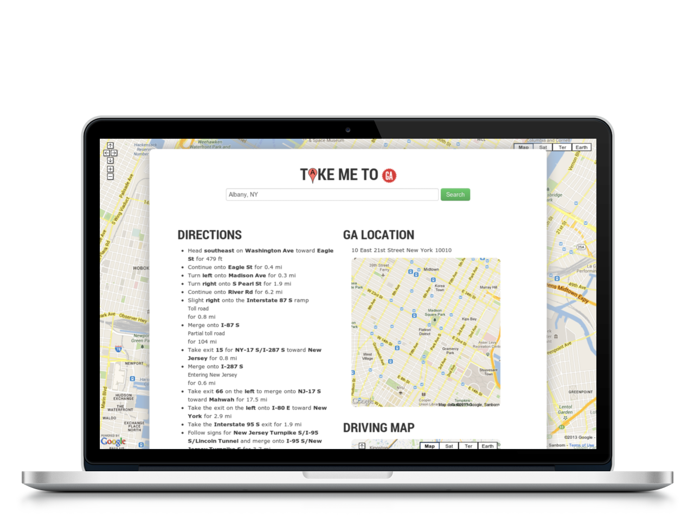
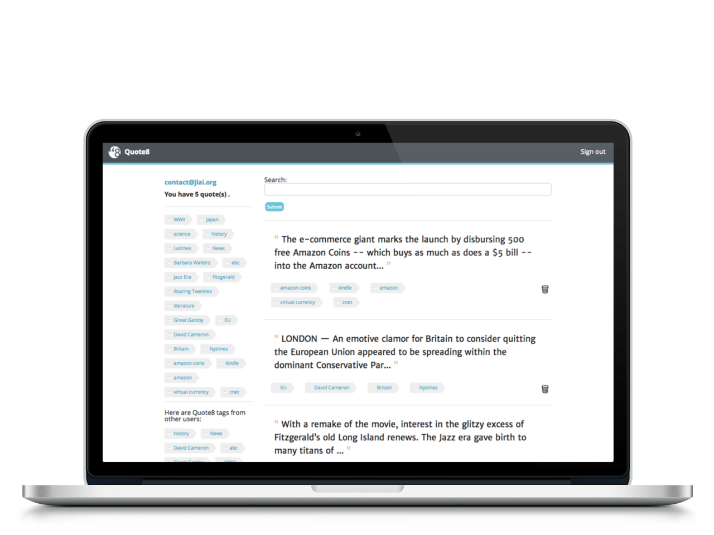

Who is JLai?
- SF Bay local
- School in Davis, volunteer education work in Oakland, Sac and LA
- IT tech support work in LA
About Me:
- GA WDI graduate
- Translation? General Assembly Web Development Immersive
- A very good fullstack program indeed, frontend & backend, Ruby and Javascript focused
And...
- Linux and Open Source enthusiast
- Can run the three platforms (Win, Mac, Linux), and recover data in case of a crash....
Several Projects
Individual & TeamProject: Take me to GA
- Location finder for GA locations, 4 in US, and several international
- Rails: Active Record, JSON requests; Gems: Geocoder, Devise; API's: Google Maps

Project: Quote8.me
- Bookmarking service for highlighted quotes on the Web
- Rails: Active Record, Devise, Rails Admin, Acts as Taggable Gem; Javascript: jQuery, Javascript bookmarklet; HTML: Foundation Zurb, svg icons; Git: group project workflow

eeeeeeeeee=================================
ffffffffff=================================
gggggggggg=================================
hhhhhhhhh=================================
Technology Stacks Used
The Core Building Block Matter
And the molecules that they built
- Rails, JQuery, Underscore, Coffeescript, Haml, SCSS, Twitter Bootstrap, Impress.js
To be churned out with
- Github, Heroku, Vim, Sublime, Errbit, and RSpec
Contact Me!

twitter: @jonlai
email: jonathanlai AT eltux DOT net
The Future?
CMS / LMS document project*
Dig deeper into Rails... also curious and would like to
learn about Django and Laravel, for python and php respectively
Dig deeper into Rails... also curious and would like to
learn about Django and Laravel, for python and php respectively
Majored in Plant Bio, and minored in education.
Would love to work in a company dealing with healthcare, education, or food technology.